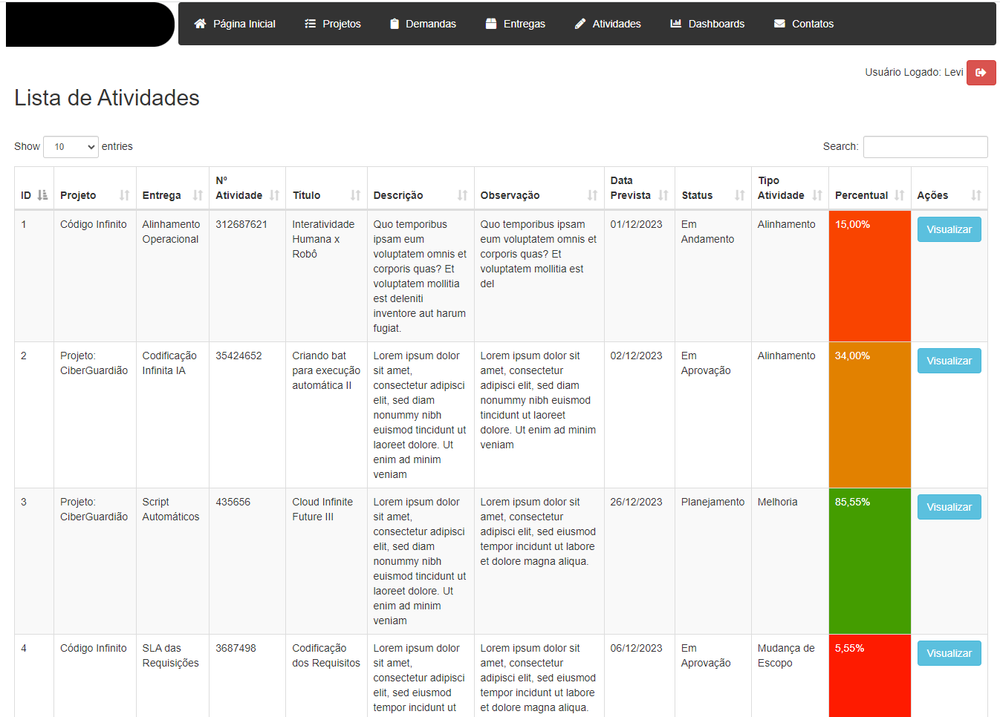
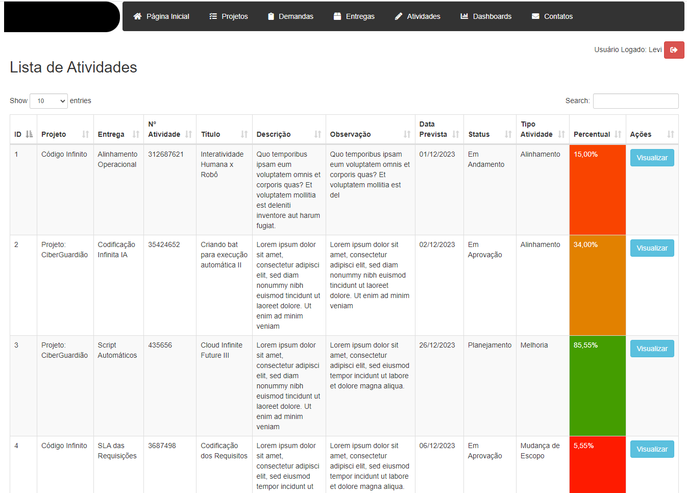

Projetos


Análise de Clima Tempo
jan de 2024 - jan de 2024
Este é um projeto de um painel interativo utilizando a linguagem R, em conjunto com as bibliotecas shinydashboard, ggplot2, plotly, lubridate, dplyr, explore o projeto de minha autoria "Análise de Clima". que proporciona uma experiência envolvente para visualização e compreensão de dados climáticos, oferecendo gráficos interativos, estatísticas mensais, anuais e muito mais. Explore a dinâmica meteorológica de forma acessível e informativa.
📘 Este projeto foi desenvolvido usando:
- R Studio, Linguagem R
- shinydashboard, ggplot2, plotly, lubridate, dplyr
- ui.R: Este arquivo contém a definição da interface do usuário (UI) da sua aplicação Shiny.
- server.R: Neste arquivo, você define a lógica do servidor.
- data.R: Etapa dedicada à manipulação de dados.
- Servidor Web: Você precisará de um servidor web para hospedar sua página. Alguns servidores web populares incluem o Apache, Nginx, ou servidores específicos para R, como o Rook ou Shiny.
- Configuração do Servidor: Configure o servidor para lidar com a execução de scripts R, se necessário.
Bibliotecas:
Estrutura do Projeto:
Requisitos:


Análise de Desempenho de Vendas
jan de 2024 - jan de 2024
Este é um projeto de um painel interativo em Python utilizando as bibliotecas Streamlit, Pandas, Plotly e Numpy, explore o projeto de minha autoria "Análise de Desempenho de Vendas" que oferece uma experiência envolvente na visualização e compreensão dos dados de vendas, apresentando gráficos interativos, estatísticas mensais, anuais e outros insights. Explore a dinâmica de desempenho de vendas de forma acessível e informativa, proporcionando uma análise abrangente e atraente para os usuários.
📘 Este projeto foi desenvolvido usando:
- Python, Anaconda, Visual Studio Code
- Streamlit, Pandas, Plotly e Numpy
- app.py: Este arquivo contém a definição da interface do usuário, dados e a lógica.
- Servidor Web tais como (Heroku, PythonAnywhere, AWS, Google Cloud Platform, Microsoft Azure) que são plataformas de hospedagem na web que oferecem serviços para implantar, gerenciar e executar aplicativos na nuvem.
Bibliotecas:
Estrutura do Projeto:
Requisitos:


Saúde Pública - Sistema de Gestão de Consultas
jan de 2024 - jan de 2024
Este é um sistema de gerenciamento para dados de saúde pública. Ele permite o registro de hospitais, pacientes e registros médicos, além de fornecer funcionalidades como mapas de leitos, dashboards e relatórios. (Os dados aqui são fictícios gerados pela biblioteca faker).
📘 Este projeto foi desenvolvido usando:
- Python e Django: Framework web em Python para desenvolvimento rápido.
- HTML/CSS: Linguagens padrão para marcação e estilo de páginas web.
- JavaScript / jQuery: Para interatividade do lado do cliente.
- Bootstrap: Biblioteca de código aberto para design e estilização.
- DataTables: Biblioteca JavaScript para tabelas interativas.
- Font Awesome: Biblioteca de ícones vetoriais.
- lista_hospitais.html
- lista_pacientes.html
- lista_registros_medicos.html
- adicionar_registro_medico.html
- adicionar_paciente.html
- login.html
- inicio.html
- mapa_leitos.html
- relatorio.html
- dashboards.html
- Heroku
- PythonAnywhere
- AWS
- Google Cloud Platform
- Microsoft Azure
Bibliotecas:
Estrutura do Projeto:
Requisitos:
Servidor Web tais comoque são plataformas de hospedagem na web que oferecem serviços para implantar, gerenciar e executar aplicativos na nuvem.


 



Sistema de Gerenciamento de Projetos
ago de 2023 - ago de 2023
Visa gerenciar os projetos, proporcionando uma visão geral abrangente, oferecendo funcionalidades para cadastrar, consultar e editar informações relacionadas aos projetos. (Os dados apresentados aqui são fictícios).
📘 Este projeto foi desenvolvido usando:
- Python e Django: Framework web em Python para desenvolvimento rápido.
- HTML/CSS: Linguagens padrão para marcação e estilo de páginas web.
- JavaScript / jQuery: Para interatividade do lado do cliente.
- Bootstrap: Biblioteca de código aberto para design e estilização.
- DataTables: Biblioteca JavaScript para tabelas interativas.
- Font Awesome: Biblioteca de ícones vetoriais.
- Sistema de Login: Permite a conexão com o sistema conforme os usuários cadastrados no banco de dados.
- Cadastro de Projetos: Permite o cadastro de novos projetos, fornecendo informações como tipo de projeto, subtipo, situação, prioridade, gerente responsável, coordenadoria e outros detalhes relevantes.
- Consulta e Edição de Projetos: Oferece uma interface para consultar e editar informações de projetos existentes, garantindo uma atualização constante e precisa dos dados.
- Gestão de Demandas e Atividades: Permite o cadastro e monitoramento de demandas associadas aos projetos, bem como o registro e acompanhamento das atividades relacionadas a cada projeto.
- Controle de Entregas: Facilita o registro e acompanhamento das entregas associadas a cada projeto, fornecendo uma visão clara do progresso.
- Dashboards e Indicadores: Apresenta dashboards que exibem indicadores importantes sobre o desempenho dos projetos, fornecendo insights valiosos para a tomada de decisões.
- Gestão de Contatos: Permite o cadastro de contatos relevantes para os projetos, facilitando a comunicação e colaboração entre as partes envolvidas.
- Personalização por Gerente: Inclui a capacidade de personalizar as visualizações e relatórios com base nos gerentes de projeto, permitindo uma análise mais específica e direcionada.
- Eficiência Operacional: Agiliza os processos de gerenciamento de projetos, reduzindo redundâncias e melhorando a eficiência operacional.
- Tomada de Decisões Embasada: Fornece dados e indicadores relevantes para apoiar a tomada de decisões informadas em relação aos projetos em andamento.
- Comunicação Facilitada: Melhora a comunicação entre as equipes, gerentes e demais stakeholders, promovendo uma colaboração mais eficaz.
- Monitoramento em Tempo Real: Possibilita o monitoramento em tempo real do status dos projetos, identificando áreas que precisam de atenção imediata.
- Visão Holística: Proporciona uma visão holística dos projetos, subtipos, situações, prioridades, gerentes e coordenadorias, contribuindo para uma gestão mais abrangente.
- Servidor Web (ex. Apache)
- PHP 8.2.4
- MySQL ou MariaDB 10.4.28
Bibliotecas:
Principais Funcionalidades:
Benefícios Esperados:
Requisitos:


Certificado SSL Checker
jul de 2023 - jul de 2023
Este projeto é um Certificado SSL Checker, que verifica e exibe informações sobre os certificados SSL de uma lista de URLs. Ele permite visualizar o status de validade dos certificados SSL, o domínio, o emissor e a data de validade.
📘 Este projeto foi desenvolvido usando:
- PHP: linguagem de programação utilizada para a lógica do servidor e manipulação dos certificados SSL.
- HTML: linguagem de marcação utilizada para a estrutura da página web.
- CSS: linguagem de estilo utilizada para a aparência e o design da página web.
- GitHub: plataforma utilizada para hospedar o código-fonte do projeto.
- Bootstrap: Biblioteca de código aberto para design e estilização.
- OpenSSL: biblioteca utilizada para obter informações dos certificados SSL.
- Servidor Web (ex. Apache)
- PHP 8.2.4
Bibliotecas:
Requisitos:


Gestão de Estoque de TI
jul de 2023 - jul de 2023
Este projeto é um sistema de gestão de equipamentos de TI que permite o registro e controle de entrada e saída de diversos tipos de equipamentos, como CPUs, monitores, teclados, mouses, notebooks, impressoras e componentes.
📘 Este projeto foi desenvolvido usando:
- PHP
- MySQL
- HTML
- CSS
- JavaScript
- Bootstrap: Biblioteca de código aberto para design e estilização.
- DataTables: Biblioteca JavaScript para tabelas interativas.
- Registro de entrada e saída de equipamentos, incluindo marca, modelo, série, tipo, layout, preço e observação.
- Armazenamento dos dados em um banco de dados MySQL.
- Exibição dos equipamentos registrados em tabelas separadas para entrada e saída, permitindo fácil visualização e filtragem.
- Possibilidade de edição e exclusão de registros existentes.
- Servidor web com suporte a PHP
- Banco de dados MySQL para armazenar os dados dos equipamentos.
Bibliotecas:
Funcionalidades:
Requisitos:


Calendário de Eventos
jul de 2023 - jul de 2023
O Calendário de Eventos é uma aplicação web que permite criar, visualizar e remover eventos de equipes de TI como BD, Linux, Windows, Redes, em um calendário interativo. A aplicação foi desenvolvida com o objetivo de demonstrar a integração de tecnologias front-end e back-end para criar um calendário completo.
📘 Este projeto foi desenvolvido usando:
- PHP
- MySQL
- HTML
- CSS
- JavaScript
- Bootstrap: Biblioteca de código aberto para design e estilização.
- DataTables: Biblioteca para tabelas interativas.
- Exibição de eventos em um calendário interativo.
- Adição de novos eventos com título, data, hora, descrição, equipe e cor personalizada.
- Exibição dos detalhes de um evento ao clicar
- Remoção de eventos do calendário.
- Servidor web (como Apache ou Nginx)
- PHP 5.6 ou superior.
- MySQL para o banco de dados.
Bibliotecas:
Funcionalidades:
Requisitos:


Painel Online - Observatório
set de 2023 - set de 2023
O objetivo deste projeto é oferecer uma visualização detalhada de todos os indicadores, reunidos numa página em PHP, incluindo análises geoespaciais, métricas de desempenho e tendências ao longo do tempo. Os dashboards são alimentados por dados em tempo real e podem ser personalizados para atender às necessidades específicas da sua organização.
📘 Este projeto foi desenvolvido usando:
- Linguagens: PHP, HTML, CSS, JavaScript
- Integração de Dashboards: Power BI
- Versionamento de Código: Git e GitHub
- Bootstrap: Biblioteca para design e estilização.
- Servidor Web (ex. Apache)
- PHP 8.2.4
Bibliotecas:
Requisitos:


Gestão de Tickets OTRS no Grafana
abr de 2023 - abr de 2023
Este projeto consiste em uma coleção de dashboards no Grafana para monitorar e visualizar métricas relacionadas a um sistema de chamados do OTRS.
📘 Este projeto foi desenvolvido usando:
- Queries
- Tickets Abertos, Fechados, Prioridades, etc
- Sistema Grafana
- Banco de dados PostgreSQL
Funcionalidades:
Requisitos:
Livros Publicados

📚 "Fuja da Corrida dos Ratos" 🐭✨
EbookPlay · 16 de mar de 2023
Este livro aborda sobre a corrida dos ratos que é um termo usado para descrever a vida frenética e competitiva que muitas pessoas levam, onde elas trabalham longas horas, têm pouco tempo livre e gastam muito dinheiro para manter um estilo de vida que muitas vezes é insustentável. Se você está procurando sair da corrida dos ratos, aqui estão sugestões de tudo que precisa.
📘 O que você encontrará:
- Insights valiosos sobre como escapar da armadilha da monotonia e criar alternativas significativas.
- Descubra como quebrar padrões para trilhar um caminho autêntico para o sucesso.

🎯 "Como ter Foco e Disciplina: Estratégias para Alcançar Seus Objetivos" 🚀
EbookPlay · 19 de mar de 2023
Em um mundo cheio de distrações, manter o foco e a disciplina é um desafio constante. Se você tem metas pessoais e profissionais que parecem inalcançáveis, meu novo livro é feito para você.
📘 O que você encontrará:
- Profundas reflexões sobre a importância do foco e disciplina.
- Estratégias práticas para superar obstáculos e manter a motivação.
- Exercícios para aprimorar sua concentração e cultivar a disciplina diária.

🌟 "Perseverança: Um Caminho de Persistência Infinita" 🌟
EbookPlay · 18 de mar de 2023
Em meu novo livro, mergulho no poder transformador da perseverança. Ao longo das páginas, descubra histórias inspiradoras, lições valiosas e estratégias práticas para cultivar a persistência em sua jornada.
📘 O que você encontrará:
- Narrativas de resiliência que iluminam o potencial da perseverança.
- Dicas para superar desafios e seguir em frente com determinação.
- Exercícios práticos para fortalecer sua mentalidade resiliente.

🔐 "O Código Criptográfico: Navegando com Segurança no Mundo das Criptomoedas" 🚀
EbookPlay · 22 de mar de 2023
Você já se perguntou como se destacar no mercado volátil das criptomoedas? Meu novo livro, "O Código Criptográfico," é seu guia confiável para se tornar um trader de criptomoedas bem-sucedido.
📘 O que você encontrará:
- Uma introdução completa ao The Crypto Code e sua plataforma segura.
- Estratégias para navegar pelas flutuações do mercado de criptomoedas.
- Dicas para tomar decisões informadas e reduzir riscos.

🔥 "Burnout: A Chama que Consome e Como Preveni-la" 🔥
EbookPlay · 28 de mar de 2023
O burnout, uma chama que consome, é uma realidade enfrentada por muitos em nossa sociedade moderna. Em meu novo livro, explorarei profundamente esse estado de exaustão emocional, fornecendo insights cruciais para a prevenção e tratamento.
📘 O que você encontrará:
- Compreensão detalhada dos sinais de burnout.
- Estratégias para indivíduos lidarem com a exaustão emocional.
- Um foco especial em como as empresas podem criar ambientes de trabalho saudáveis.

🏔️ "O Segredo Alpino Para Perda de Peso Saudável" 🍃
EbookPlay · 31 de mar de 2023
Descubra o Alpilean, o segredo alpino que revoluciona a jornada de perda de peso de maneira saudável e natural. Guia completo, repleto de informações essenciais sobre este suplemento alimentar que vai além da simples perda de peso.
📘 O que você encontrará:
- Detalhes sobre a composição do Alpilean e sua abordagem única.
- Como o suplemento pode impulsionar a perda de peso de maneira equilibrada.
- Benefícios que vão desde o aumento de energia até a melhoria do humor.

🌟 "A Sorte Favorece os Corajosos: Desvendando o Poder do Lema Fortis Fortuna Adiuvat" 🌟
EbookPlay · 11 de abr de 2023
Em meu novo livro, mergulho no significado profundo da expressão em latim "Fortis Fortuna Adiuvat". Este lema, enraizado na história, é mais do que palavras; é uma filosofia que transcende os desafios.
📘 O que você encontrará:
- Exploração da origem histórica e cultural da frase inspiradora.
- Histórias envolventes de indivíduos corajosos que superaram adversidades.
- Estratégias práticas para cultivar a coragem e enfrentar desafios com confiança.

🌱 "Crachá não é Legado: Além da Carreira em Busca de um Propósito Duradouro" 🌟
EbookPlay · 14 de abr de 2023
Em meu novo livro, mergulho na reflexão profunda de como, muitas vezes, as pessoas se perdem na jornada profissional, esquecendo-se de que a vida é vasta e repleta de oportunidades para construir um legado além do crachá.
📘 O que você encontrará:
- Experiências e histórias reais de quem superou a identidade ligada ao trabalho.
- Estratégias práticas para reconectar-se com interesses pessoais e relacionamentos significativos.
- Um guia para descobrir e construir um legado que transcende a carreira.
- Aposentadoria ou transições de carreira não precisam ser momentos de perda; podem ser oportunidades.

🐦 "A Superstição do Pombo: Uma Jornada Fascinante pelos Ritos e Reflexões" 🌌
EbookPlay · 23 de set de 2023
Embarque em uma viagem única e cativante através das tramas da superstição com meu novo livro, "A Superstição do Pombo". Descubra como essas crenças profundas, que muitas vezes transcendem as barreiras entre espécies, conectam os pombos e os seres humanos de maneiras surpreendentes.
📘 O que você encontrará:
- Uma exploração aprofundada da psicologia por trás da superstição.
- Conexões inusitadas entre comportamentos supersticiosos em humanos e pombos.
✨ "Abracadabra: Desperte Seus Poderes Curativos" ✨
EbookPlay · (Em fase de revisão)
Este livro aborda sobre uma jornada de autodescoberta e transformação. "Abracadabra" envolve o incrível poder que você tem dentro de si para curar, crescer e criar uma vida extraordinária.
📘 O que você encontrará:
- Técnicas práticas para fortalecer sua mentalidade.
- Exercícios poderosos para promover o autocuidado.
- Estratégias para superar desafios e encontrar a cura interior.
- Prepare-se para desvendar os mistérios da sua própria magia interior. Esteja pronto para dizer "Abracadabra" e manifestar uma vida cheia de positividade e bem-estar.
🚀 "Despertando a Proatividade: Vencendo a Procrastinação e Alcançando o Sucesso" 🚀
EbookPlay · (Em fase de revisão)
Você já se viu adiando o que sabe ser importante? Se sim, você não está sozinho. Em meu novo livro, mergulho fundo no universo da procrastinação e apresento estratégias práticas para libertar todo o seu potencial.
📘 O que você encontrará:
- Uma análise abrangente da psicologia por trás da procrastinação.
- Revelações sobre as causas subjacentes desse hábito destrutivo.
- Inspiradoras histórias de superação e sucesso.
- Este não é apenas um livro sobre vencer a procrastinação; é um guia para despertar a sua proatividade e alcançar o sucesso que você merece. Junte-se a mim nesta jornada de autodescoberta e transformação.
Currículo
Certificados

1Z0-1085-23 - Oracle Cloud Infrastructure 2023 Foundations Associate
jul de 2023
A certificação Oracle Cloud Infrastructure (OCI) Foundations é para indivíduos que pretendem demonstrar conhecimento fundamental de serviços de nuvem pública fornecidos pela Oracle Cloud Infrastructure (OCI). Esta certificação é para candidatos com formação não técnica, como aqueles envolvidos na venda ou aquisição de soluções em nuvem, bem como aqueles com formação técnica que desejam validar seu conhecimento de nível fundamental em torno dos principais serviços OCI.
📘 Este projeto foi desenvolvido usando: